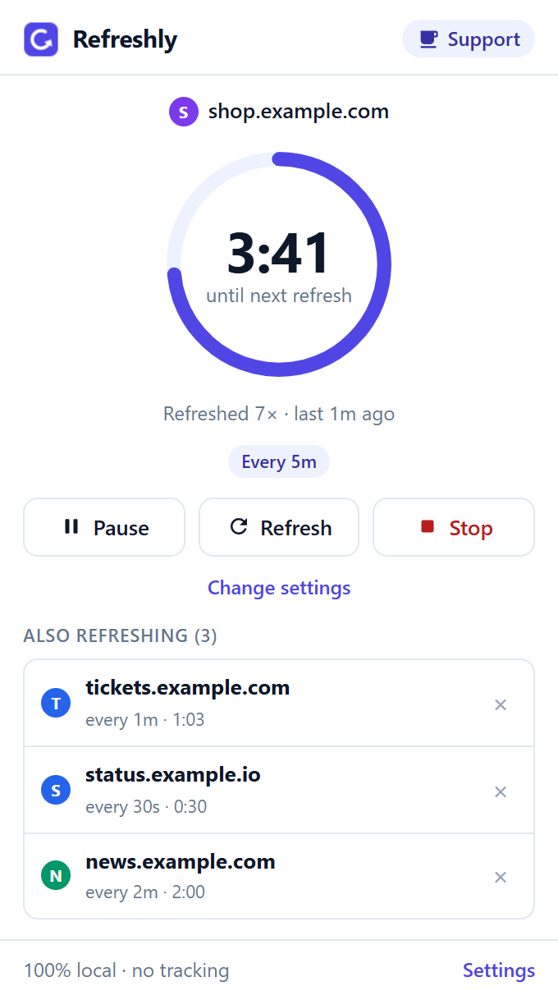
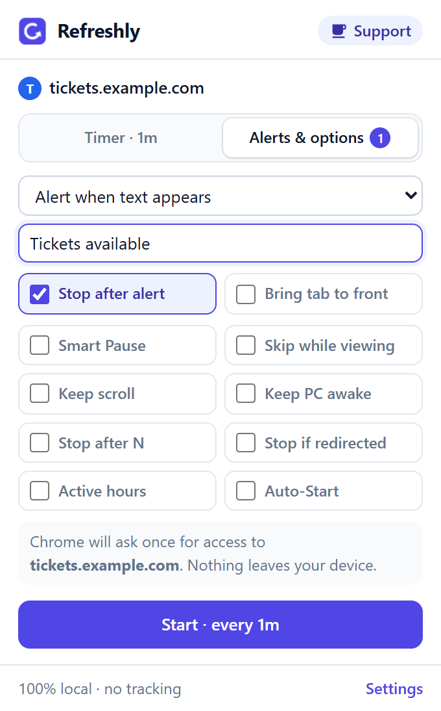

Auto refresh any tab.
Every feature free.
Refreshly reloads pages for you and tells you when something changes: tickets, restocks, dashboards, order queues. No account, no subscription, no ads.
- Unlimited tabs
- Keyword alerts
- Runs 100% on your computer

Set up in 10 seconds
- Open RefreshlyRight-click any page and choose Auto refresh this tab, click the icon, or press Alt+Shift+F.
- Pick a time30 seconds to 1 hour, or your own time down to 1 second.
- DoneThe icon shows the timer. Pause, refresh or stop any time.
Get an alert the moment it’s back
Tell Refreshly what to watch for: “In stock”, “Tickets available”, or any change on the page. It refreshes in the background and alerts you with a sound and a notification. It can stop by itself once it finds it.

Everything is free
No Pro plan, no trial, no “upgrade to unlock”. Every feature is included for everyone.
Refreshing
- Unlimited tabs, each with its own timer
- 30 seconds to 1 hour, or down to 1 second
- Random timing (±10% or ±25%)
- Bypass cache (hard refresh)
- Keeps your scroll position
- Skips refreshes while you’re offline
Alerts
- Keyword alerts when text appears
- Alerts when text disappears
- Change alerts for any page change
- Sound and notification
- Brings the tab to the front
- Stops by itself after the alert
Control
- Pause & resume any tab
- Smart Pause while you type
- Skip while you’re looking at the tab
- Stop after a number of refreshes, or if you’re logged out
- Keep your computer awake
- Active hours and Auto-Start pages
Private by design
No servers
Refreshly runs entirely in your browser and never sends your pages anywhere.
No access by default
Plain refreshing can’t read pages at all. Alerts only work on the sites you allow, and you can remove that access any time.
No tracking
No analytics, no ads, no account, no selling of data. Privacy policy
Questions
Is it really free? What’s the catch?
Yes, every feature is free, with no limits and no ads. There’s no account and nothing to buy. If Refreshly saves you time, you can support it with a tip on Ko-fi, but you never have to.
Why does Chrome ask for access to a site?
Only for alerts, Smart Pause, Keep scroll, “stop if redirected” and refreshing faster than every 30 seconds, because those need to look at the page. Chrome asks once, for that one site. Plain refreshing needs no access at all. You can remove access any time in Refreshly’s settings.
Does it keep refreshing when the tab is in the background?
Yes. Each tab has its own timer, and it keeps running in background tabs and even in tabs Chrome has put to sleep.
Can it refresh faster than every 30 seconds?
Yes, down to every second. Chrome’s own timers can’t go below 30 seconds, so for faster refreshes Refreshly times them from inside the page, which is why Chrome asks for that site’s access first.
Will it wipe what I’m typing?
Not with Smart Pause on: Refreshly waits while you type or have unsaved form input. You can also turn on “Skip while I’m looking at this tab”, and “Keep my scroll position” puts you back where you were after each refresh.
Can I leave it running overnight?
Yes. Tick “Keep my computer awake” so your computer doesn’t go to sleep, and “Stop if the page goes to another address” so it stops if you get logged out. While you’re offline, Refreshly skips refreshes instead of loading error pages.
Does it work in Microsoft Edge?
Yes. Edge can install extensions from the Chrome Web Store: open the link, click “Allow extensions from other stores”, then “Add to Chrome”.
Stop pressing F5.
Free, private, and set up in 10 seconds.
Add to Chrome, freeContact & support
Questions or ideas: email refreshly.support@gmail.com. Bug reports are also welcome on GitHub. We usually reply within 2 business days.